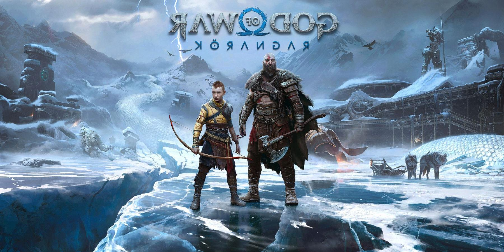

God of War

God of War Ragnarök is an upcoming action-adventure hack and slash video game developed by Santa Monica Studio and will be
published by Sony Interactive Entertainment. It is scheduled to be released in 2022 for the PlayStation 4 and PlayStation 5.